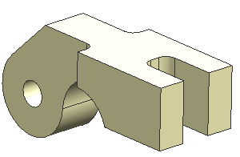
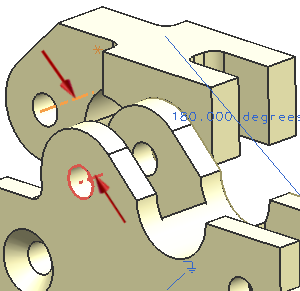
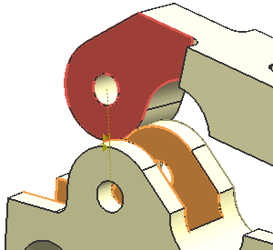
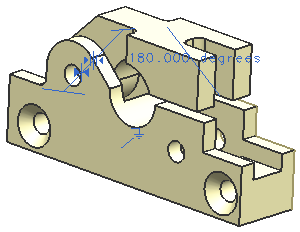

添加并约束虎钳帽(cap)到装配中
-
使用添加组件
 命令添加 des15_cap_clamp_b 到装配中，对于定位选项，使用通过约束。
命令添加 des15_cap_clamp_b 到装配中，对于定位选项，使用通过约束。
-
在如下图所示的两个平面间创建一个180度的角度约束。

-
使用接触对齐约束来对齐 des15_cap_clamp_b 中孔的中心线到 des15_clamp_base_b 中最上面的孔的中心线。
提示
如果虎钳帽反转了180度，使用反转方向
 命令来维持下图中所示的方位。
命令来维持下图中所示的方位。
-
在虎钳帽的两个外平面和虎钳台的两个内平面间创建一个中心2对2约束。

您约束的组件看起来应该类似下图所示。
